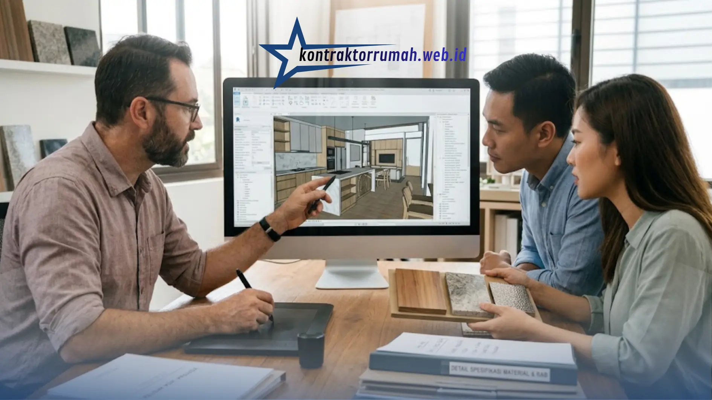

Mewujudkan hunian yang indah, aman, dan fungsional bukan sekadar soal menumpuk bata dan menuangkan beton. Diperlukan sentuhan ahli untuk menerjemahkan visi dan kebutuhan Anda menjadi rancangan yang presisi secara teknis maupun estetika. Menggunakan jasa arsitek rumah adalah investasi jangka panjang yang bisa menyelamatkan Anda dari kesalahan desain yang justru menguras biaya perbaikan di masa depan.
Poin Penting
- Arsitek menerjemahkan kebutuhan ruang menjadi gambar kerja teknis yang menjadi acuan tukang dan kontraktor.
- Biaya jasa dihitung berdasarkan persentase RAB (5-10%) atau tarif per meter persegi (Rp150.000-Rp500.000/m²).
- Proses kerja melalui 5 tahapan, dari konsultasi awal hingga gambar kerja (DED) dan pengawasan berkala.
- Revisi paling fleksibel dilakukan di tahap desain skematik, sebelum masuk ke gambar kerja detail.
- Kesepakatan tertulis soal lingkup kerja dan jumlah revisi wajib dibuat sejak awal kerja sama.
Apa Saja yang Dikerjakan Seorang Arsitek?
Peran arsitek jauh lebih luas dari sekadar menggambar denah. Secara umum, tanggung jawab mereka meliputi hal-hal berikut.
- Menerjemahkan kebutuhan ruang dan gaya hidup penghuni ke dalam konsep desain.
- Menghitung tata letak ruang agar fungsional dan efisien.
- Menyusun gambar kerja teknis yang menjadi acuan tukang dan kontraktor di lapangan.
- Memastikan desain memenuhi aspek pencahayaan, ventilasi, dan sirkulasi udara alami.
- Mengoordinasikan aspek struktur, kelistrikan, dan perpipaan dengan tenaga ahli terkait.
Bagaimana Arsitek Menentukan Biaya Jasa?
Sistem pembayaran jasa arsitek di Indonesia umumnya terbagi menjadi dua metode utama.
Berdasarkan persentase RAB. Biasanya berkisar antara 5% hingga 10% dari total Rencana Anggaran Biaya pembangunan rumah. Semakin kompleks desain dan semakin besar nilai proyek, persentase bisa bervariasi.
Berdasarkan luas bangunan per meter persegi. Biaya dihitung per meter persegi, misalnya berkisar Rp150.000 hingga Rp500.000/m², tergantung kompleksitas desain, gaya rumah yang diinginkan, dan jam terbang atau reputasi arsitek.
Faktor lain yang turut memengaruhi biaya meliputi lokasi proyek, tingkat detail gambar kerja yang diminta, serta apakah jasa pengawasan berkala turut disertakan dalam paket kerja sama.

Tahap pengembangan desain 3D membantu klien membayangkan hasil akhir sebelum masuk ke gambar kerja teknis.
Tahapan Proses Kerja Bersama Arsitek
1. Konsultasi awal dan penggalian konsep. Diskusi mendalam mengenai kebutuhan ruang, preferensi gaya, jumlah penghuni, survei lahan, hingga batas anggaran maksimal.
2. Pengembangan desain skematik. Pembuatan denah kasar, zonasi ruang, dan gambaran awal fasad. Pada tahap ini, revisi masih sangat fleksibel dan menjadi momen penting untuk menyelaraskan visi Anda dengan arsitek.
3. Pengembangan desain lanjutan. Penyempurnaan denah, tampilan 3D, serta pemilihan material dan warna secara lebih spesifik.
4. Pembuatan gambar kerja (Detail Engineering Design). Dokumen teknis sangat detail mencakup struktur, arsitektur, kelistrikan, dan perpipaan, yang menjadi panduan utama bagi tukang dan kontraktor selama pelaksanaan.
5. Pengawasan berkala (opsional). Sebagian arsitek menawarkan layanan pengawasan proyek untuk memastikan bangunan didirikan sesuai gambar kerja dan standar kualitas yang disepakati.
Tips Memilih Arsitek yang Tepat
- Perhatikan portofolio dan pastikan gaya desainnya selaras dengan selera Anda.
- Cek testimoni klien sebelumnya untuk menilai komunikasi dan profesionalisme kerja.
- Diskusikan kejelasan lingkup kerja sejak awal, agar tidak ada biaya tambahan yang mengejutkan di kemudian hari.
- Pastikan ada kesepakatan tertulis mengenai jumlah revisi yang termasuk dalam paket jasa.
Catatan dari tim Kontraktor Rumah: Kontraktor Rumah beroperasi sebagai mitra konstruksi berbadan hukum PT resmi, siap membantu menghubungkan pemilik proyek dengan tim arsitek yang transparan soal biaya dan lingkup kerja. Gambar kerja teknis yang jelas sejak tahap desain menjadi fondasi penting agar pelaksanaan konstruksi berjalan sesuai rencana.
FAQ Seputar Jasa Arsitek Rumah
Memilih jasa arsitek rumah yang tepat adalah investasi jangka panjang yang bisa menyelamatkan Anda dari kesalahan desain yang justru menguras biaya perbaikan di masa depan. Pastikan lingkup kerja, biaya, dan jumlah revisi disepakati secara tertulis sejak awal agar proses desain berjalan lancar hingga gambar kerja siap digunakan kontraktor di lapangan.